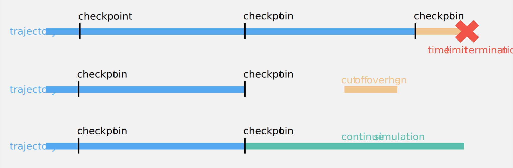

To use mixturemm install the package and import it. All required classes (Project, Molecule, Forcefield and Mixture) for simulation and analysis are added to the namespace.
The first step to beginning a project is setting the path to the directory where the project folder should be stored.
1
workdir='home/molecule_mixture_project'
A project is defined via four setting sections. First, OpenMM is assigned the hardware on which the simulations are to run; if the simulations are to be run on a high-performance computing center, this is overwritten with the hardware resources specified when generating the submissions. Second, the parameter space of box sizes, temperatures, pressures, and dilutions to be considered is set. After that, the settings for the individual ensembles that follow each other in the simulation are made. Finally, the settings for constraints and nonbonded interactions affecting all ensembles are given.
The platform the simulation should run on. OpenMM ref.
simulation_properties
The platform properties for the simulation. OpenMM ref.
total_number_molecules
A list with the number of molecules that should be placed in the simulation box.
init_box_side_length
The initial box side lengths that should be used by packmol. Packmol ref.
chi_water_s
A list with all different molar fractions of water that should be simulated.
temperature_s
A list with all different temperatures in kelvin at which the boxes should be simulated.
npt_equilibration_pressure_s
A list with all pressures in bar at which the boxes should be simulated.
npt_equilibration_pressure_coupling_frequency
The pressure coupling frequency at which the Monte Carlo barostat should interact with the system and attempt a Monte Carlo move to adjust the volume during the NpT equilibration in simulation steps. OpenMM ref.
npt_equilibration_temperature_coupling_frequency
The collision frequency of the Langevin thermostat during the NpT equilibration in inverse picoseconds. OpenMM ref.
npt_equilibration_timestep_fs
The integration time step during the NpT equilibration in femtoseconds.
npt_equilibration_duration_ns
The duration of the NpT equilibration in nanoseconds.
reporting_frequency_state_npt_equilibration
The reporting frequency of the openMM StateDataReporter in simulation steps during the NpT equilibration. OpenMM ref.
nvt_equilibration_temperature_coupling_frequency
The collision frequency of the Langevin thermostat during the NVT equilibration in inverse picoseconds. OpenMM ref.
nvt_equilibration_timestep_fs
The integration time step during the NVT equilibration in femtoseconds.
nvt_equilibration_duration_ns
The duration of the NVT equilibration in nanoseconds.
reporting_frequency_state_nvt_equilibration
The reporting frequency of the openMM StateDataReporter in simulation steps during the NVT equilibration. OpenMM ref.
nve_production_timestep_fs
The integration time step during the NVE production in femtoseconds.
nve_production_duration_ns
The duration of the NVE production in nanoseconds.
reporting_frequency_coordinates_unwrapped
The reporting frequency of the trajectory with unwrapped coordinates in simulation steps during the NVE production. OpenMM ref.
reporting_frequency_coordinates_wrapped
The reporting frequency of the trajectory with wrapped coordinates in simulation steps during the NVE production. OpenMM ref.
reporting_frequency_state_nve_production
The reporting frequency of the openMM StateDataReporter in simulation steps during the NVE production. OpenMM ref.
replica_count
The number of times the simulation of one system should be replicated.
pme_error_tolerance
Decides how large the grid for PME is together with the cutoff. OpenMM ref.
constraint_tolerance
The constraint tolerance specifies the distance tolerance within which constraints are maintained, as a fraction of the constrained distance.
cutoff_distance_nm
The cutoff distance for nonbonded interactions in nanometers. OpenMM ref.
cutoff_switch_distance_nm
Starting point of the switching function that makes the energy go smoothly to 0 at the cutoff distance in nanometers. OpenMM ref.
A project can easily be extended by adding the new parameters to the existing parameter lists of total molecule number and box size, temperature, pressure and water mole > fraction or increasing the replica count.
Subsequently, the molecules contained in the mixture and their force fields are defined and the associated files are added to the project. On the one hand definition and the PDB files of the molecules
The number of atoms that the molecule consists of.
path_to_pdb
The path to the molecule PDB file.
abbreviation
The abbreviation of the molecule that is used inside the PDB file.
smiles
The SMILES code of the molecule.
inchi
The InChI code of the molecule.
molar_mass
The molar mass of the molecule.
use_as_water
Decides whether the molecule is used as water or not. If used as water, the water molar fraction is applied to it while packing boxes.
... on the other hand the definitions of the force fields and the XML files.
United-atoms force fields
When simulating force fields with united atoms, as in the example here, note that OpenMM recognizes all basic atom types but not united-atoms. These must be added as described as "elements".
The name under which the force field should be stored.
built_in
Decides whether the fore field is part of openMM or from an external source. If true, declares that a built in forcefield of openmm will be used.
elements
OpenMM uses Elements to match molecules to the force field. If atomtypes in the force field are unknown to OpenMM, they are registered by giving their name and mass in the form {'name' : mass}. OpenMM ref.
Then, the molecule names and their corresponding mole fraction in the mixture are given.
{"workflow_info":{"general":{"package_name":"mixturemm","simulation_engine":"OpenMM","analysis_package":"MDAnalysis"},"simulation":{"ensemble_order":"---(slow heating)---> |NpT| ---(rescale boxes and assign velocities)---> |NVT| ------> |NVE|","pressure_and_temperature_control":{"NpT":"Langevin thermostat, Monte Carlo barostat","NVT":"Langevin thermostat","NVE":"no pressure and temperature control"},"constraints":"hydrogen bonds","nonbonded forces algorithm":"particle mesh ewald"}},"project":{"simulation_parameters":{"total_number_of_molecules":[2000,6000,15000],"initial_box_side_lengths":[65,75,102],"water_mole_fractions":[0,0.1,0.2,0.3,0.4,0.5,0.6,0.7,0.8,0.9,1],"temperature_s_in_kelvin":[298.15,308.15,318.15],"pressure_s_in_bar":[1],"number_of_replicas":40,"replica_starting_number":1,"overcharged_boxes":{"[2000] molecules":"with 60 replicas"}},"hardware_settings":{"platform":"CUDA","properties":{"DeviceIndex":"0","Precision":"double"}},"simulation_settings":{"pme_error_tolerance":1e-06,"constraint_tolerance":1e-07,"cutoff_distance_in_nm":1.4,"switching_function_starting_distance_in_nm":1.2},"npt_equilibration":{"pressure_coupling_frequency":500,"temperature_coupling_frequency":0.1,"timestep_in_fs":2,"duration_in_ns":12,"state_data_reporting_frequency":500},"nvt_equilibration":{"temperature_coupling_frequency":0.1,"timestep_in_fs":2,"duration_in_ns":20,"state_data_reporting_frequency":4000},"nve_production":{"timestep_in_fs":1,"duration_in_ns":50,"state_data_reporting_frequency":8000,"unwrapped_trajectory_reporting_frequency":4000,"wrapped_trajectory_reporting_frequency":8000}},"molecules":{"Water":{"number_of_atoms":4,"abbreviation":"HOH","molar_ratio":1,"smiles_code":"O","inchi_key":"1S/H2O/h1H2","molar_mass":18.015,"used_as_water":true},"Methanol":{"number_of_atoms":3,"abbreviation":"Me","molar_ratio":1,"smiles_code":"CO","inchi_key":"1S/CH4O/c1-2/h2H,1H3","molar_mass":32.04,"used_as_water":false}},"force fields":{"tip4p-fb":{"built_in":false,"added_elements":null},"trappe_methanol":{"built_in":false,"added_elements":{"3":15.0347}}}}
In the last preparatory step, the simulated systems and their replicas are generated by combining the parameters and the corresponding folder structure is created. Then, the simulation boxes are packed with the PDB files of the molecules corresponding to their proportion in the total number of molecules. In addition, a further number of replicas can be added at this point for individual box sizes.
There are two ways to run the simulations defined in the project. They can be run locally on the computer where the project was initiated. However, this is not recommended for large-scale projects due to the low computing power. This mode is rather used for test runs and troubleshooting of the system setup. First the NpT equilibration of all systems takes place, then the NVT equilibration and following NVE production of the trajectories of the replicas.
The recommended approach for large-scale projects is the submission of the simulations to a high-performance computing center. There, the simulations are transferred via a queuing system to nodes where they run. With the resources available there, it is possible to run many simulations in parallel. To run the simulations on a high performance computing center the executable scripts from the HPC folder of the mixturemm package are needed and the whole project folder has to be transferred to a workspace on the high performance computing center. Submission scripts are required to submit simulations to the queue. These are generated based on the given project and the specification of the hardware resources. To ensure the optimal use of the available resources on the nodes, the simulations can be parallelized according to the available GPUs or CPU cores.
Dependencies
Be aware that all dependencies have to be available on the high-performance computing center as well. It is therefore recommended to install it into a anaconda environment with OpenMM, packmol, MDAnalysis, mdtraj, seaborn, more-itertools and tidynamics. This environment should be the one you activate on the nodes where the simulations and analyses are submitted to. Additionally, you have to either upload or generate your project folder with all the wanted job scripts to/on your high-performance computing center.
Updating the folder on the high-performance computing center when running additional replicas
When new replicas are added by increasing the replica number of the project, the folder structure on the high-performance computing center can be extended with
The name of the anaconda environment containing the dependencies.
scheduler
The queue scheduler.
partition
The partition the job should be submitted to.
number_of_threads
The number of requested threads.
number_of_gpus
The number of GPUs requested on a node.
chunk_size
Number of simulations to submit in a chunk, should correspond to the number of requested GPUs.
max_runtime_hh_mm_ss
Maximum runtime for a job.
which_hpc
The HPC the script should be run on, currently supported are 'bwUniCluster2.0' and 'HoreKa'.
chain_submission_number
The number of job submissions that should be submitted as a sequential chain job.
dependency_type
Dependency keyword of the SLURM workload manager for chain jobs.
checkpoint_frequency
The frequency at which checkpoints are saved to restart from once a chain job continues.
After transferring the folder with the job submission scripts to the high-performance computing center, they are submitted from via the terminal.
1
bash submit_adjust_to_correct_density.sh
1
bash submit_simulate.sh
However, nodes can only be occupied for a limited period of time. This leads to the fact that simulations have to be interrupted and resumed. This is implemented as follows with simulation checkpoints:

Since the queues only allow a limited number of job submissions at once, the number of generated job submission scripts is limited to this. Thus, the project is submitted in multiple submission cycles to work through the required simulations. All in all, the simulation takes place on a high-performance data center according to the following scheme:
After each simulation cycle on the high-performance data center, the status of the simulations is checked with the job checker.
In addition to the percentage progress of each replica, the average temperature and the percentage deviation of the total energy are determined. At the end of the output txt file, it is summarized how many of the replicas are finished and how many still need to run. In addition, if the given limit for the deviation of the total energy of one or more replicas is exceeded, a warning is added with the name of the replica. With the information about replicas already completed and replicas still to be run, the job submissions of the next simulation cycle are created. The job checker is launched with:
Just as for the simulations, job submissions are generated for the analyses, which are then transferred to the high-performance computing center. The density analysis is then submitted in one step, it refers only to the NpT equilibration phase.
The name of the anaconda environment containing the dependencies.
scheduler
The queue scheduler.
partition
The partition the job should be submitted to.
number_of_threads
The number of requested threads.
max_runtime_hh_mm_ss
Maximum runtime for a job.
which_hpc
The HPC the script should be run on, currently supported are 'bwUniCluster2.0' and 'HoreKa'.
Launch it with:
1
batch submit_density_analysis.sh
The two much more computationally intensive analyses on self-diffusion coefficients, viscosity, and hydrogen bonds do not take place in multiple rounds as do the simulations; however, it can be decided here how many queue submissions an analysis will be distributed among. In addition to the submission, the analysis is concluded after the submitted jobs are completed.
project.create_hpc_submission_analyze_hbonds(hpc_workspace="/hpc/workspace/",hpc_folder="/hpc/workspace/molecule_mixture_project",hpc_scripts_folder="/hpc/workspace/HPC",environment_name='conda_env_analysis',scheduler='SBATCH',partition='cpuonly',number_of_threads=152,parallel_running=4,submission_split=25,max_runtime_hh_mm_ss='24:00:00',conda_module=False,donors='resname HOH and name O or resname Me and name O',hydrogens='resname HOH and name H1 H2 or resname Me and name H2',acceptors='resname HOH and name O or resname Me and name O',just_conclude=False)
argument
description
hpc_workspace
The path to the hpc workspace.
hpc_folder
The path to the project folder on the hpc.
hpc_scripts_folder
The path to the python scripts folder.
environment_name
The name of the anaconda environment containing the dependencies.
scheduler
The queue scheduler.
partition
The partition the job should be submitted to.
number_of_threads
The number of requested threads.
parallel_running
The number of replica analyses running in parallel.
submission_split
The number of job submissions the analysis is split in.
max_runtime_hh_mm_ss
Maximum runtime for a job.
which_hpc
The HPC the script should be run on, currently supported are 'bwUniCluster2.0' and 'HoreKa'.
donors
Selection of all hydrogen bond donor atoms in MDAnalysis selection syntax.
hydrogens
Selection of all hydrogen bond hydrogen atoms in MDAnalysis selection syntax.
acceptors
Selection of all hydrogen bond acceptor atoms in MDAnalysis selection syntax.
just_conclude
If true, skips the generation of job submissions scripts and just generates the conclude script.
The results of the analyses are each stored in a JSON file that contains metadata for the project in addition to the measurement points, as well as metadata for each individual measurement point. These JSON files are stored inside the results folder. A completed project has the following folder structure with corresponding files: